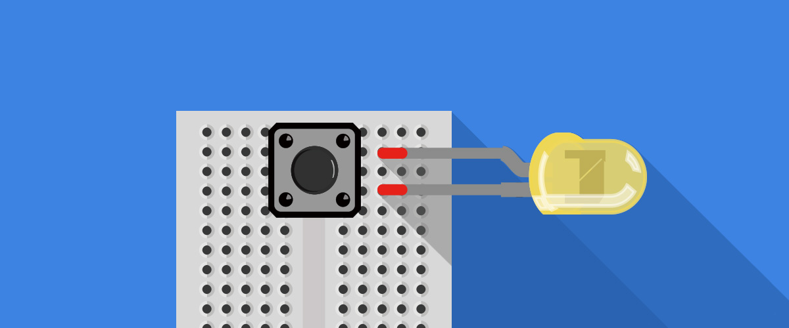
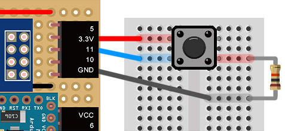
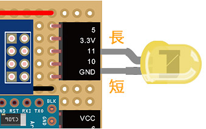
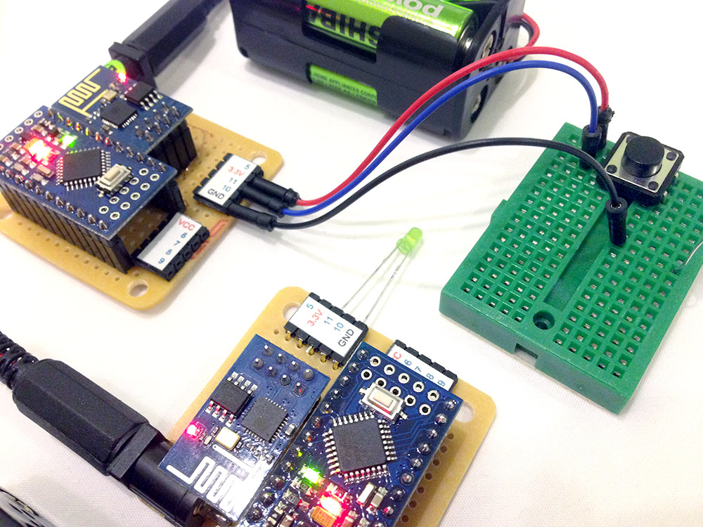
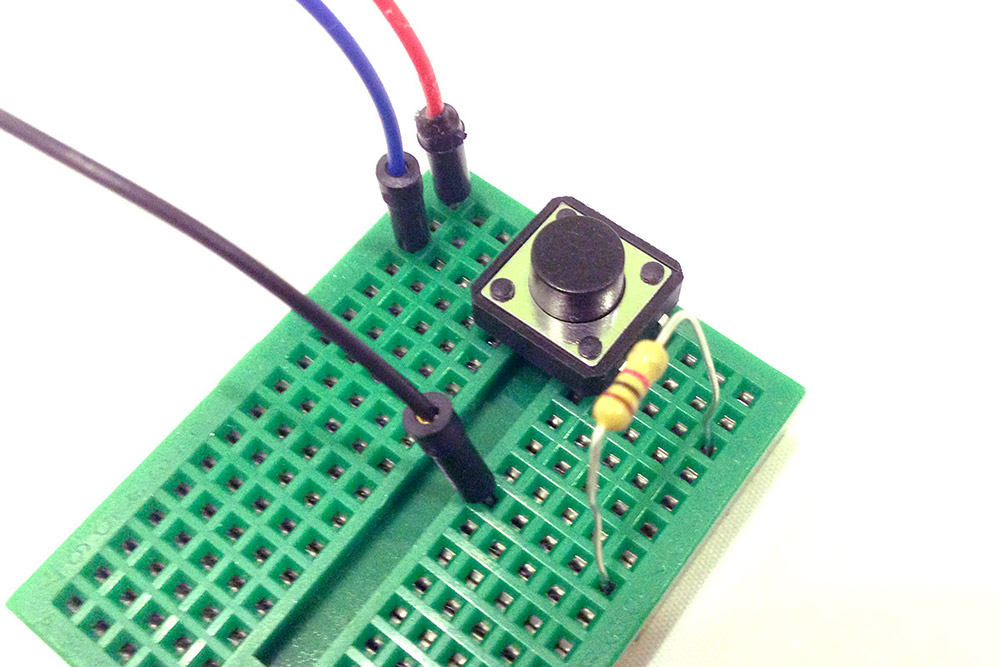

範例與教學 9：利用按鈕控制 LED 燈
之前的範例提到的都只是控制單一台的 Webduino，這個範例將會展示，如何藉由 Webduino 開發板 ( A 板 ) 的按鈕，去觸發另外一台 Webduino 開發板 ( B 板 ) 的 LED 燈，同時你也可以藉由網頁上的按鈕模擬實際按鈕的動作。
範例影片展示
接線與實作
-
1. 接上按鈕與 LED
按鈕是一個很常見的元件，當我們進行點壓的時候，按鈕上的四隻腳會呈現全部通路的情形，為了避免有短路的發生，所以我們要接一顆電阻進行保護，下圖是利用 webduino 開發板 ( A 板 ) 與麵包板所接出來的按鈕範例，這裏我們會用到腳位 3.3v、11 與 GND。

-
2. 接上 LED
在另外一塊 webduino 開發板 ( B 板 ) 接上 LED，長腳接在 11，短腳接在 GND。

-
3. 完成後的實際長相


範例程式 ( 預覽 )